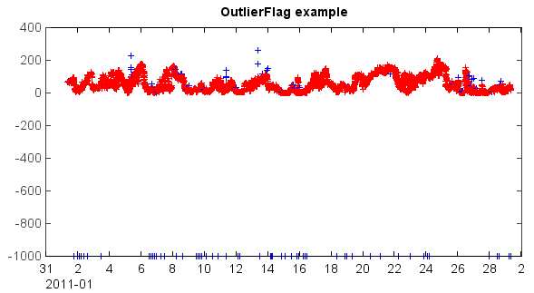

A flag setting object should be created using flagset() function. Then the outliers of data array can be automaticly flagged by check_all() function. Following steps were demonstrated in below smaple script.
- Read data table from example data file using readtable() function.
- Read time and PM2.5 data array from the table by data column name.
- Create a flag setting object using flagset() function with expected arguments.
- Make flag codes using check_all() function from PM2.5 data array and the flag setting.
- Make colors from flag codes by makecolors() function, and plot data with the colors (flagged data were highlighted with blue color).
- Add flag codes to the table and save the result into a new data file.
#Read data
fn = r'D:\MyProgram\Distribution\Java\MeteoInfo\MeteoInfo_Run\toolbox\OutlierFlag\sample\54826PMMUL201102_T.txt'
table = readtable(fn, delimiter=',', format='%{yyyyMMddHHmm}D%14i%11f%i%f%i%4f%i%3f')
pm2_5 = table['PM2.5']
tt = table['BeiJing_Time']
#Set flagset and check - get flag codes
fset = qaqc.flagset(minlim=-10, maxlim=50000, errornum=11, quantilenum=21, quantil=0.9, factor=2.3, stdnum=29, stdfactor=3)
fcodes = qaqc.check_all(pm2_5, fset)
#Plot data - highlight flagged data with blue color
cols = qaqc.makecolors(fcodes, c=['r','g','b'])
scatter(tt, pm2_5, s=6, edge=False, c=cols, marker='+')
xaxis(axistype='time')
title('OutlierFlag example')
#Add flag codes to table and save
table.addcoldata('Flag_PM2.5', 'string', fcodes)
outfn = 'D:/Temp/flag_test.csv'
table.savefile(outfn)
The scatter plot of the PM2.5 data array with blue color highlighted flagged data points.
